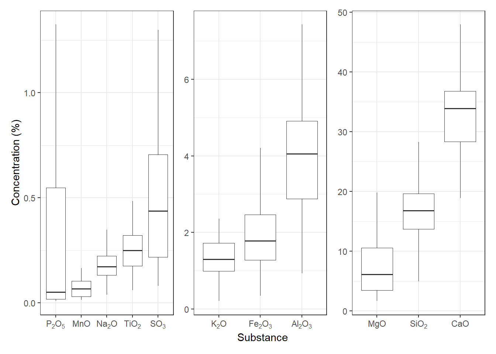
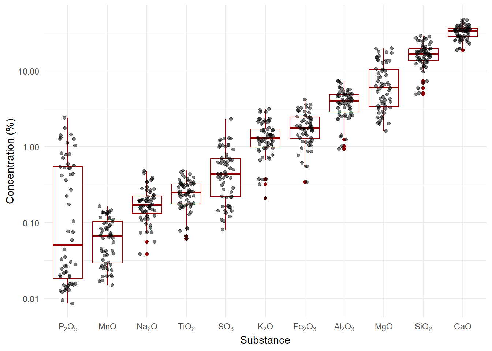

# Load data from input folder
dt_fines <- read_excel("input/Fines_Sample_data.xlsx",
sheet = "XRF", skip = 1)Sanders Limestone Fine Sampling Analysis
Introduction
This document contains the analysis for the Sanders limestone fine sampling campaign.
Setup
Data Loading
Fines data
Data Exploration
# Summary statistics
summary(dt_fines) Mineral resource Deposit Sample number LOI 950 °C
Length:60 Length:60 Length:60 Min. :25.81
Class :character Class :character Class :character 1st Qu.:31.32
Mode :character Mode :character Mode :character Median :33.83
Mean :33.85
3rd Qu.:36.05
Max. :43.49
SiO2 TiO2 Al2O3 Fe2O3
Min. : 4.923 Min. :0.06086 Min. :0.9381 Min. :0.3429
1st Qu.:13.672 1st Qu.:0.17550 1st Qu.:2.8838 1st Qu.:1.2782
Median :16.781 Median :0.25028 Median :4.0506 Median :1.7820
Mean :16.942 Mean :0.25384 Mean :4.0262 Mean :1.9239
3rd Qu.:19.604 3rd Qu.:0.32204 3rd Qu.:4.9115 3rd Qu.:2.4641
Max. :28.986 Max. :0.48481 Max. :7.4331 Max. :4.2081
MnO MgO CaO Na2O
Min. :0.01484 Min. : 1.621 Min. :18.87 Min. :0.03844
1st Qu.:0.02947 1st Qu.: 3.415 1st Qu.:28.33 1st Qu.:0.13251
Median :0.06751 Median : 6.063 Median :33.84 Median :0.17230
Mean :0.07104 Mean : 7.556 Mean :32.88 Mean :0.19220
3rd Qu.:0.10446 3rd Qu.:10.509 3rd Qu.:36.78 3rd Qu.:0.22392
Max. :0.16447 Max. :19.821 Max. :47.93 Max. :0.47904
K2O P2O5 SO3
Min. :0.2087 Min. :0.008588 Min. :0.08023
1st Qu.:0.9895 1st Qu.:0.018373 1st Qu.:0.21879
Median :1.2965 Median :0.051322 Median :0.43739
Mean :1.4266 Mean :0.377950 Mean :0.55944
3rd Qu.:1.7201 3rd Qu.:0.548353 3rd Qu.:0.70604
Max. :3.1345 Max. :2.403059 Max. :2.32933 names(dt_fines) <- c("Mineralresource", "Deposit", "Samplenumber", "LOI950C", "SiO2", "TiO2", "Al2O3",
"Fe2O3", "MnO", "MgO", "CaO", "Na2O", "K2O", "P2O5",
"SO3")Plots
Boxplot of XRF results fines (regular y-axis)
# format data for plotting
# pivot longer, excluding non-numeric columns
#exclude LOI950°C
dt_fines_long <- dt_fines %>% select(-c("LOI950C"))
dt_fines_long <- dt_fines_long %>%
pivot_longer(cols = c("SiO2", "TiO2", "Al2O3",
"Fe2O3", "MnO", "MgO", "CaO", "Na2O", "K2O", "P2O5",
"SO3"),
names_to = "Substance",
values_to = "Concentration")
# create boxplot, sort x-axis by median concentration
#plot MgO, SiO2, CaO separately due to scale issues
#start with these
subs_high <- c("MgO", "SiO2", "CaO")
subs_medium <- c("Al2O3", "Fe2O3", "K2O")
subs_low <- c("TiO2", "MnO", "P2O5", "Na2O", "SO3")
#refactor the three plots below into a function# Create a named vector for chemical formula labels with subscripts
chem_labels <- c(
"SiO2" = expression(SiO[2]),
"TiO2" = expression(TiO[2]),
"Al2O3" = expression(Al[2]*O[3]),
"Fe2O3" = expression(Fe[2]*O[3]),
"MnO" = expression(MnO),
"MgO" = expression(MgO),
"CaO" = expression(CaO),
"Na2O" = expression(Na[2]*O),
"K2O" = expression(K[2]*O),
"P2O5" = expression(P[2]*O[5]),
"SO3" = expression(SO[3])
)
boxplot_fines <- function(substances){
ggplot(dt_fines_long %>% filter(Substance %in% substances),
aes(x = reorder(Substance, Concentration, FUN = median), y = Concentration)) +
geom_boxplot(outliers = F,
size=0.3) +
labs(x = "Substance",
y = "Concentration (%)") +
scale_x_discrete(labels = chem_labels) +
theme_bw()
# geom_jitter(size = 0.1, alpha = 0.5)
}
a <- boxplot_fines(subs_low)
b <- boxplot_fines(subs_medium)
c <- boxplot_fines(subs_high)
# combine plots into a single patchwork object
p <- (a + b + c) + plot_layout(nrow = 1, guides = "collect", axes = "collect")
p_combined <- (a + b + c) + plot_layout(nrow = 1, guides = "collect", axes = "collect")
p_combined # display combined plot in the document
#apply theme_bw to all plots
#save to file (png, width=12in, height=6in, res=300)
ggsave("output/boxplot_xrf_fines.png", plot = p_combined, width = 12, height = 6, dpi = 300, scale = 0.6)Boxplot of XRF results fines (log y-axis)
# create boxplot with log y-axis, sort x-axis by median concentration
a_log <- ggplot(dt_fines_long,
aes(x = reorder(Substance, Concentration, FUN = median), y = Concentration
)) +
geom_boxplot(color = "darkred") +
labs(x = "Substance",
y = "Concentration (%)") +
theme_minimal()+
geom_jitter(width = 0.2, alpha = 0.5) +
scale_y_log10() +
scale_x_discrete(labels = chem_labels)
a_log
plot correlations between certain constituents
# Correlation plots between